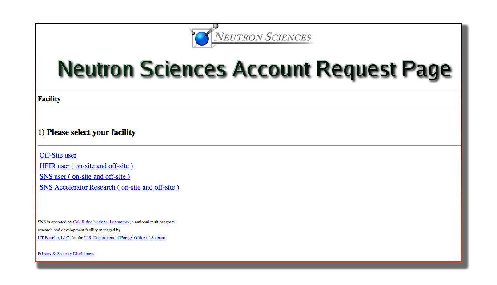
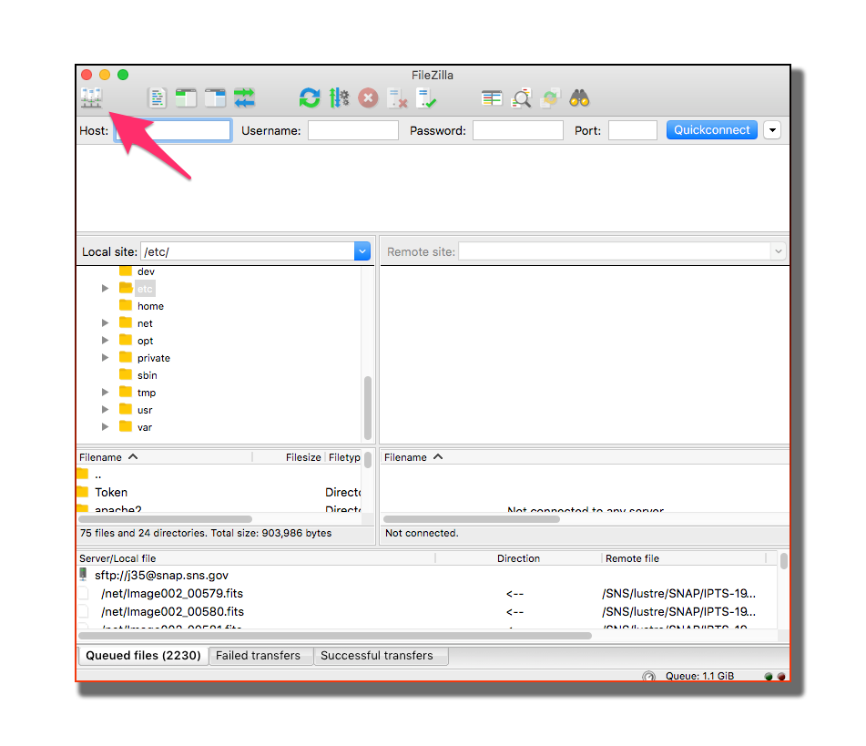

Data Analysis¶
Access your data¶
How to request access to our computers¶
Step 1 Create an XCAMS account
If you have not done so, please create an XCAMS account

Step 2 Request access to HFIR data
Request access by vising this page https://neutronsr.us/accounts/request.html
How to connect to our computer¶
the best way to analyze your data is by using our data analysis and visualization tools on our analysis computer. No software to install, all you need is connect to our computer.
How to reach your data¶
If you decide to copy/paste your data to your local computer, we recommend the use of FileZilla.

- Install FileZilla
- Create and configure a new bookmark

You can now browse to your data by following the structure /HFIR/CG1D/IPTS-XXXX

You are connected to your data¶
After your experiment has begun, your data will be automatically transferred to analysis.sns.gov if you are using the CCD or the sCMOS detectors. If you are planning on using the CCD, your local contact will transfer the data for you.
Here is an example of the structure of your IPTS folder
Analyze your data¶
To analyze your data, we provide a set of python notebook that can perform the most general request. If you have a special need for your analysis and are not sure how to do that, make sur you contact Jean Bilheux (bilheuxjm@ornl.gov).